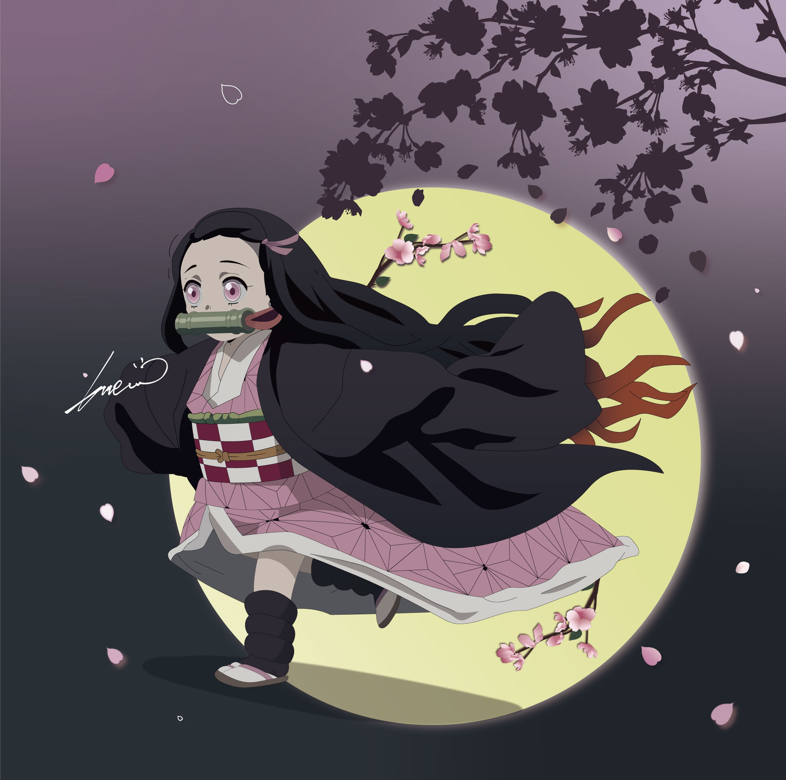
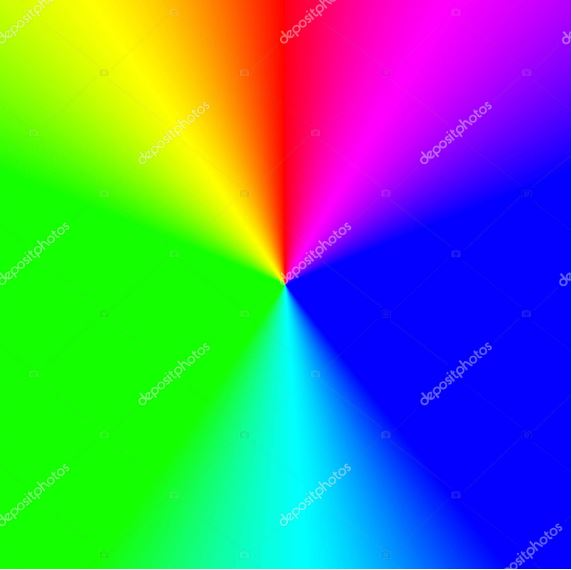

귀멸의 칼날
Demon Slayer since, 2016

《귀멸의 칼날》(일본어: 鬼滅きめつの刃やいば 키메츠노야이바[*] 영어: Demon Slayer) 은 2016년 2월 15일부터 「주간 소년 점프」에서 연재된 고토케 코요하루 (일본어: 吾峠 呼世晴)의 일본 만화/애니 시리즈이다. 현재는 애니메이션으로도 방영 중이다.
Contents
Main characterhighlight
6 sections, 2 min read
